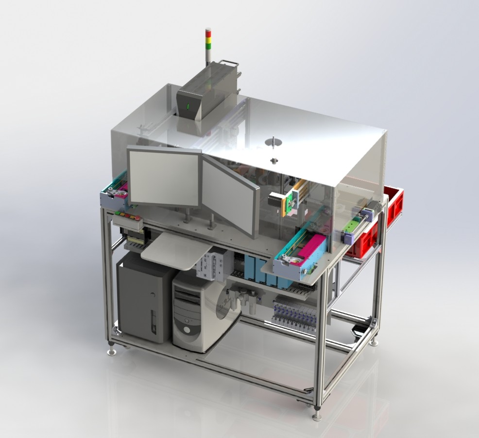

← Back to projects
Traceability Automation • Laser Marking • Vision Verification
Fully Automated Laser Marking & Barcode Checking
A fully automated system that assigns and verifies a unique barcode for every part, creating one-by-one traceability and sending production data to the company server.
Keyence LaserKeyence CCDOmron PLCBarcode VerificationServer IntegrationSolidWorks
3D Machine Design

Actual Automated Process Video
Why it was developed
Create a fully automated marking and verification process that gives every component a unique identity, supports one-by-one traceability and prevents unverified parts from moving to the next process.
What the system performs
- Automatic laser marking using a Keyence laser system
- Barcode and marking verification using a Keyence CCD camera
- Machine-sequence control using an Omron PLC
- Automatic handling, positioning and pass/fail segregation
- Production-data transfer to the company server
Engineering responsibilities
Machine concept, mechanical and 3D design, automation sequence development, PLC and laser integration, CCD inspection setup, server-data coordination, testing, commissioning and production handover.
Key outcomes
- Established one-by-one product traceability
- Automated barcode creation and verification
- Prevented parts with missing or unreadable markings from passing
- Connected production records to the company server
- Improved data gathering, quality control and investigation speed